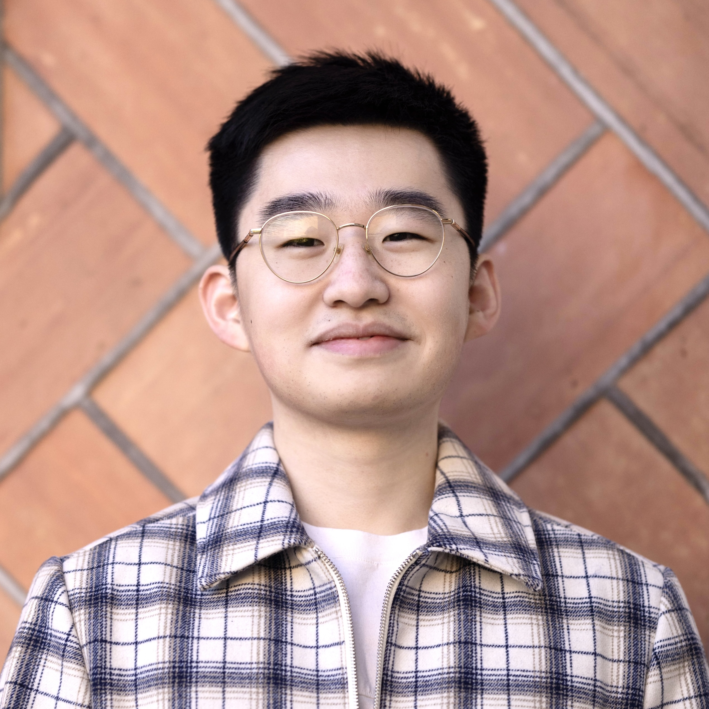
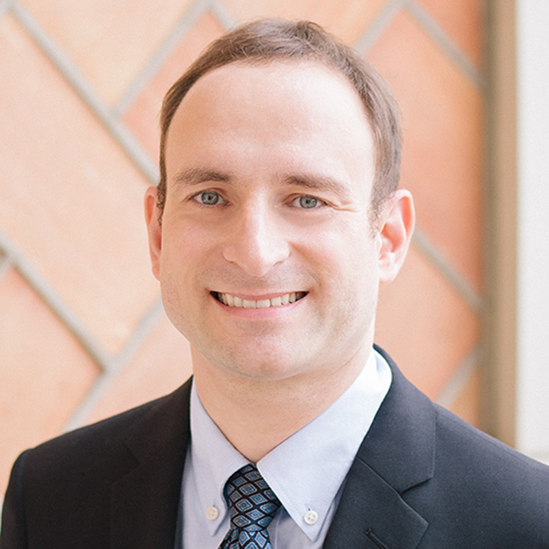

Critical applications, from AI and cryptography to scientific computing, are driving the rapid proliferation of specialized hardware designs. While this trend underscores the growing importance of specialization, it also raises fundamental questions:
When is specialized hardware truly necessary, and if so, how should we efficiently explore the design space?
This tutorial presents a principled approach to hardware-software co-design based on automatic code generation. We demonstrate how generating highly optimized implementations across diverse architectures enables informed stop-or-go decisions in hardware design.
We use SPIRAL, a code generator that has been developed over 25 years and known for generating highly optimized code for a diverse range of architectures, as a central case study (Session I). The tutorial is structured around three key questions that arise throughout the co-design cycle. First, given an application domain, when do we truly need specialized hardware? (Session II). Second, do we need a full custom accelerator, or would lightweight ISA extensions suffice? (Session III). Third, if new hardware is required, how can we design and program it efficiently? (Session IV). The tutorial concludes with invited talks highlighting recent advances in compiler design for emerging architectures and their role in hardware–software co-design.
By the end of the session, attendees will gain a practical understanding of how to leverage systems such as SPIRAL to navigate hardware-software co-design and guide specialization decisions in their own domains.
📅 When: March 23, 2026, 8 AM - 12 PM
📍 Where: The Landing Hotel, Room Monogahela
| Time | Topic | Resources |
|---|---|---|
| 8:00 | Welcome & Networking 💬 | |
| 8:30 | Opening Remarks | |
| 8:40 | Session I: Introduction to SPIRAL and Code Generation | |
| 9:10 | Session II: When Do We Truly Need Specialized Hardware? | |
| 9:35 | Session III: Do We Need Specialized Hardware, or Just a Few More Instructions? | |
| 10:00 | Coffee Break ☕ | |
| 10:30 | Session IV: How to Efficiently Design and Program Specialized Hardware? | |
| 10:55 | Invited Talk by Charith Mendis Making Compilers More Evolvable With Learned Cost Models |
|
| 11:20 | Invited Talk by Brandon Reagen HAAC: A Hardware-Software Co-Design for Data Oblivious Processing |
ISCA '23 |
| 11:45 | Open Discussion & Closing Remarks |

